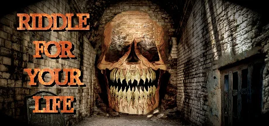
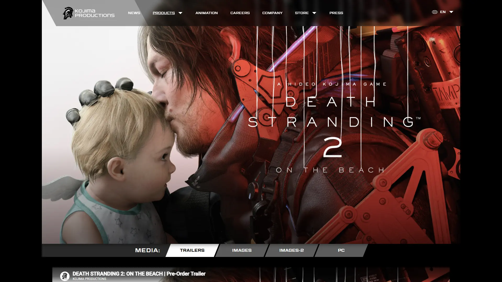
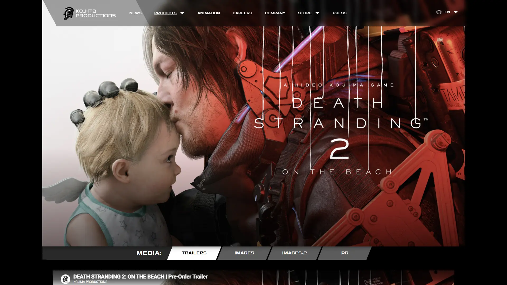

小岛秀夫新作，“社交绞动作”第二弹。




想象一片「死亡搁浅」事件之后的近未来美国——一场起源于生死边界的跨维度灾难把死后世界冥滩与现实焊在一起，BT 怨灵在雨中游荡、时间雨让万物加速腐朽、死者尸体若不焚化便会引发湮灭爆炸。你看到的是废墟城市残骸×冰岛级原始荒野×时空裂缝三层叠加的末日地理——玄武岩黑色山脉、苔原一望无际、远处幽蓝开罗尔极光像被神秘电台烧出的光斑。人类躲进散落各地的结点城市，用开罗尔网络勉强相连。这不是后启示录蛮荒，这是小岛秀夫式诗化末世。
你是Sam Porter Bridges——传奇送货人，前作里你已经把美国大陆用开罗尔网络重新连起来过一次。本作 Sam 带着BB 灵婴 Lou从美国跨海前往墨西哥与澳大利亚，开启更宏大的环太平洋送货旅程。一支神秘武装组织 Drawbridge 登场、新反派 Higgs 与昔日 Fragile 角力让冥滩重新撕裂。每天你检查货物清单、给 BB 换尿布、扣好外骨骼、把脐带卷成一圈塞进背包——这具身体既是工具又是父亲。
那次你第一次背着 80 公斤货物穿越冰岛玄武岩山脊、Lou 在吊舱里咯咯笑指引你避开 BT 雾团的瞬间，小岛秀夫把游戏推到一个奇怪而温柔的位置——你打的不是怪，是每一步重力、每一次呼吸、每一段陌生人留下的桥；那场你在荒野尽头收到陌生玩家点赞通知的桥段——异步建造让你第一次明白「连接」从来不只是网络协议；那次你不得不在 Higgs 与 Fragile 之间决定要不要再次按下连接开关的对话节点，Sam 与冥滩签订了新的私人契约。这不是关于打败反派的故事，是「连接是救赎还是新型奴役」的故事——脐带还在你手里，下一站是要走，还是要留？
末世诗意 × 冰岛超现实，是小岛秀夫把冰岛玄武岩荒野的真实地貌（黑色火山岩、苔原、冰川溪流、远方雪山）和冥滩超自然现象（开罗尔粒子幽蓝极光、时间雨灰白雾团、BT 黑色焦油手印、悬挂在脐带尽头的 BB 吊舱）反差缝合在送货模拟 × 异步建造 RPG外壳里的混血美学。底色是塔可夫斯基式诗化荒原；变异在于把「孤独行走」做成游戏机制——背包重量、平衡、呼吸都是叙事。色彩锁定玄武岩黑 + 开罗尔幽蓝 + 焦油黑三色组合。
末世诗意视觉线跨越半世纪。1979 年塔可夫斯基《潜行者》定义诗化末世废墟视觉源头——本作精神祖父。1968 年《2001 太空漫游》定义超现实时空裂缝美学。2000 年代冰岛地貌纪录片（BBC 行星地球系列）让玄武岩+苔原成为末世背景代名词。1979 年《异形》定义太空工业蓝领+生体怪诞质感。2017 年《异星灾变 Annihilation》小说+电影定义当代生态超现实美学（开罗尔粒子的精神养分）。1988 年《合金装备 MGS》小岛秀夫开创电影化潜行 + 哲学叙事范式。2019 年《死亡搁浅》初代正式开辟「送货模拟+异步连接」品类。2025 年《死亡搁浅 2：冥滩之上》在 Decima 引擎+次世代算力下登场——血液武器+载具基地+环太平洋扩张把小岛诗化末世推到工业巅峰。
基于体验清单 · 审美偏好 · IP故事三维度综合选出
点击链接跳转到对应平台查看 · 仅整理外部链接